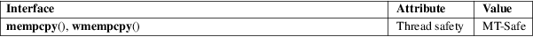

mempcpy, wmempcpy − copy memory area
Standard C library (libc, −lc)
#define
_GNU_SOURCE /* See feature_test_macros(7) */
#include <string.h>
void
*mempcpy(void dest[restrict .n],
const void src[restrict .n],
size_t n);
#define
_GNU_SOURCE /* See feature_test_macros(7) */
#include <wchar.h>
wchar_t
*wmempcpy(wchar_t dest[restrict
.n],
const wchar_t src[restrict .n],
size_t n);
The mempcpy() function is nearly identical to the memcpy(3) function. It copies n bytes from the object beginning at src into the object pointed to by dest. But instead of returning the value of dest it returns a pointer to the byte following the last written byte.
This function is useful in situations where a number of objects shall be copied to consecutive memory positions.
The wmempcpy() function is identical but takes wchar_t type arguments and copies n wide characters.
dest + n.
For an explanation of the terms used in this section, see attributes(7).

GNU.
glibc 2.1.
void *
combine(void *o1, size_t s1, void *o2, size_t s2)
{
void *result = malloc(s1 + s2);
if (result != NULL)
mempcpy(mempcpy(result, o1, s1), o2, s2);
return result;
}
memccpy(3), memcpy(3), memmove(3), wmemcpy(3)